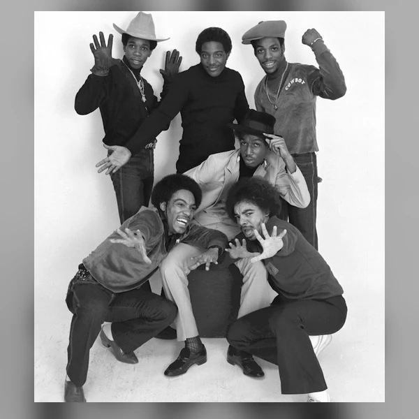
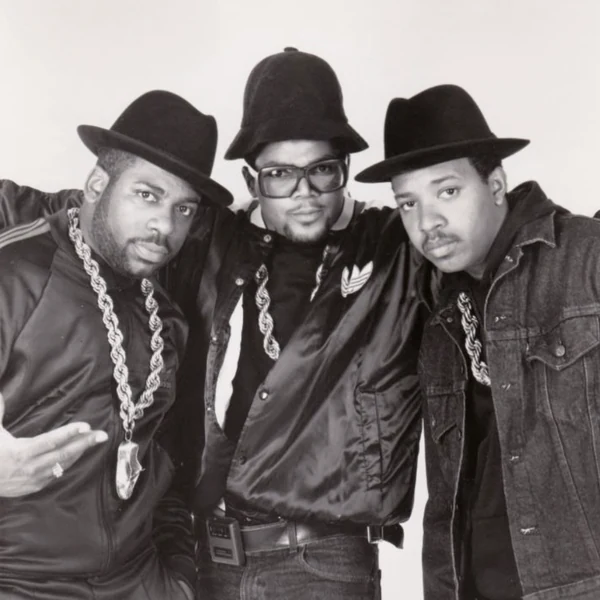
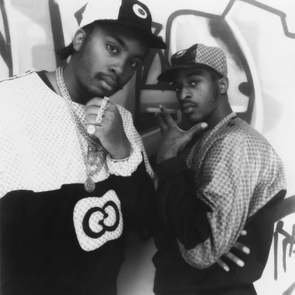
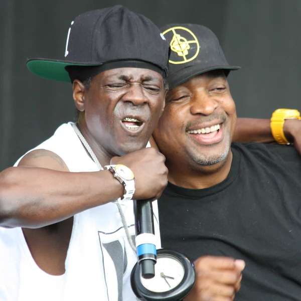
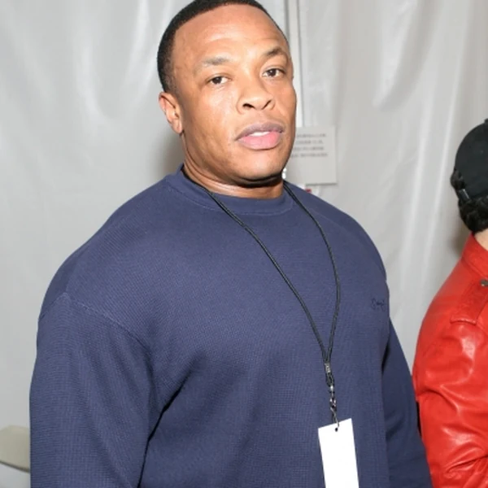
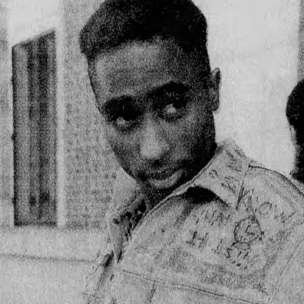
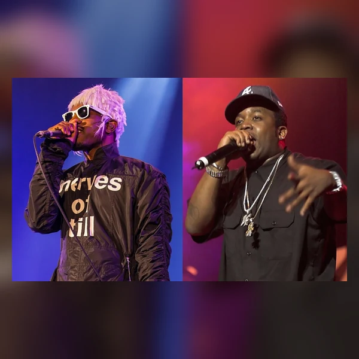
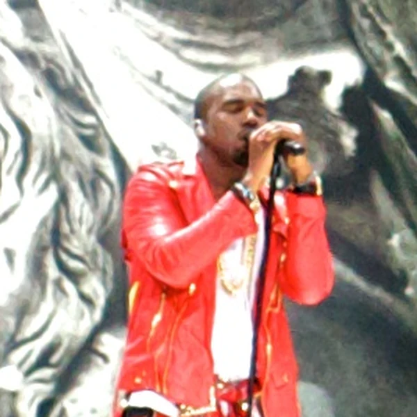

Hip Hop is a musical and cultural movement that emerged among Black and Latino communities in New York City during the 1970s, especially in the Bronx. Its early music developed around DJs who isolated the most rhythmic parts of records and kept them going while MCs worked the crowd. Over time, those spoken performances became increasingly elaborate, and Rap developed into the movement's most widely heard musical form. But Hip Hop was never just another name for Rap. Dance and graffiti were part of the same growing culture, with people finding different ways to make something of their own. Musically, Hip Hop has since moved far beyond its original turntable techniques, embracing sampling, electronic production and many regional approaches to rhythm and vocals. What connects these styles is less a fixed sound than an approach to making music from the materials available. A movement that began at neighbourhood parties now occupies a substantial part of the global music industry, although it hasn't entirely stopped arguing with that industry.
Hip Hop started as a rhythmic phrase used by MCs at parties, long before anyone was writing careful definitions of the culture. Early performers repeated the words as part of their patter, and accounts of exactly who used them first do not all agree. The word hip already suggested being informed or aware, while hop carried the obvious association with movement. There is no need to assume the two words were originally intended as a grand statement about music. They were useful sounds for an MC trying to hold a crowd's attention. By the early 1980s, Hip Hop had become a name for the wider culture developing around DJing, rapping, dance and graffiti. Rap, meanwhile, described a particular way of delivering words and eventually the records built around it. The distinction remains useful, even if everyday conversation often treats the two terms as interchangeable. Naming a culture is rarely as tidy as naming a product, much to the disappointment of anyone trying to file it under one heading.
Hip Hop developed during the 1970s in Bronx neighbourhoods dealing with disinvestment, declining public services and limited opportunities for young people. Local parties provided places to gather, and DJs began using turntables creatively rather than simply playing one record after another. Drawing on Black American musical traditions and a city shaped by Caribbean and Latino communities, the scene developed its own ways of dancing and speaking over rhythms. MCing gradually moved from introducing performers and encouraging dancers to longer, more complex rhymes. The music began reaching audiences outside New York through recordings at the end of the decade. During the 1980s, drum machines and samplers made it possible to construct new tracks from recorded fragments, changing what producers could do with relatively little equipment. The 1990s brought increasingly distinct regional sounds and a much larger market. Since then, digital production and online distribution have helped Hip Hop develop internationally, often in local languages and with different political concerns. Its history is not one continuous march towards commercial success. Underground scenes have carried on developing alongside the mainstream throughout.
Hip Hop often puts the rhythm of the voice at the centre of the music. In Rap, the way syllables fall against a beat can matter as much as the words themselves. Performers stretch phrases, leave gaps and change their emphasis to create what is usually called flow. The instrumental backing may be relatively simple, but that does not make it easy to produce. A producer might take a short section of an older recording and give it a completely different purpose through repetition, editing and new percussion. Other tracks are built from synthesised sounds without samples at all. Strong low frequencies and clearly defined drums are common, although the pace and arrangement vary considerably between styles. Scratching and other turntable techniques remain part of Hip Hop's musical vocabulary, even when a particular recording uses none of them. The genre also leaves room for singing and for performances that move between speech and melody. Its variety is precisely why reducing Hip Hop to a drumbeat and somebody rhyming over it misses quite a lot.








Hip Hop gave young people in overlooked New York neighbourhoods a way to make themselves heard without waiting for permission from established cultural institutions. Parties, dance crews and independent releases helped create opportunities in places where investment was scarce. As the music reached a wider audience, it brought experiences of racism, policing and economic inequality into mainstream discussion, although it has always included humour and entertainment alongside political commentary. Its influence spread through fashion and language as well as music, and communities across the world adapted Hip Hop to express their own circumstances. That reach brought contradictions. Record companies could profit from stories about deprivation while doing little to change the conditions behind them. Women also helped build the culture, yet have often faced unequal treatment within it. Hip Hop has produced both serious social criticism and plenty of material that deserves criticism itself. That tension is part of its history, not an argument against its importance. A form developed by young people with limited resources ended up changing who could speak through popular music and who was expected to listen.